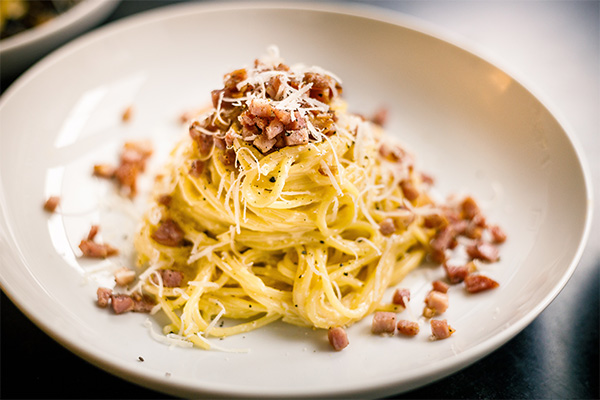

Spaghetti alla Carbonara

Rome's Favourite Pasta!
Spaghetti Carbonara is a classic Roman pasta dish beloved for its simplicity and rich, comforting flavors. Originating from Italy, this dish has gained worldwide popularity due to its creamy sauce, made with eggs, Parmesan cheese, pancetta, and pepper. The key to a perfect carbonara lies in the balance of these ingredients and the technique used to create a velvety sauce that coats the pasta beautifully. It's a testament to the Italian philosophy of making delicious meals with just a few high-quality ingredients. This recipe will guide you through the steps of crafting an authentic and delightful Spaghetti Carbonara right in your own kitchen.
What You'll Need
- 400g spaghetti
- 150g pancetta or guanciale, diced
- 3 large eggs
- Freshly ground black pepper, to taste
- Sea salt, for pasta water
How To Make It
- Prepare the Pasta: Bring a large pot of salted water to a boil. Cook the spaghetti according to the package instructions until al dente. Drain the pasta, reserving 1/2 cup of the pasta water.
- Cook the Pancetta: While the pasta is cooking, heat a large skillet over medium heat. Add the diced pancetta and cook until it's crispy and golden brown, about 5-7 minutes, being careful not to burn it. Remove the skillet from heat.
- Prepare the Sauce:In a mixing bowl, whisk together the eggs and grated Parmesan cheese until well combined. Season with a generous amount of freshly ground black pepper.
- Combine Pasta and Sauce:Quickly toss the hot, drained spaghetti with the pancetta in the skillet, ensuring the pancetta is evenly distributed. Remove the skillet from heat. Pour the egg and cheese mixture over the hot pasta, tossing quickly to combine. The heat from the pasta will cook the eggs, creating a creamy sauce. If the sauce seems too thick, gradually add the reserved pasta water a little at a time until you reach the desired consistency.
- Serve:Divide the pasta among plates or bowls. Garnish with additional grated Parmesan cheese, a sprinkle of black pepper. Serve immediately, appreciating the creamy, savory goodness of this classic Roman dish.
Enjoy your homemade Spaghetti Carbonara, and savor the authentic flavors of Italy!